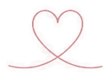
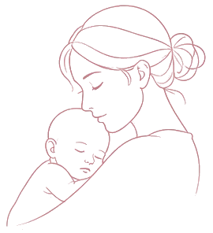

A chegada do bebê trouxe amor, mas também muitos desafios.
GESTAÇÃO E PUERPÉRIO PSICANÁLISE ONLINE
Entre o amor pelo bebê, as cobranças e o cansaço, pode ser difícil encontrar seu próprio ritmo. Posso ajudar você a compreender seus sentimentos e essa nova experiência.
Agende seu atendimentoVocê não está
sozinha
Você ama seu bebê e, ainda assim, está vivendo dias difíceis.
Talvez você tenha imaginado como seria a chegada do seu bebê, mas a experiência esteja sendo diferente do que esperava.
Talvez alguma dessas situações faça sentido para você
- Você sente medo de não dar conta.
- Está extremamente cansada e sem dormir.
- Sente culpa quando deseja um tempo para si.
- Não se reconhece em alguns momentos.
- Tem dificuldade de encontrar espaço para você e para seu relacionamento.
- Está ouvindo muitos pitacos sobre como deveria cuidar do bebê.

Talvez você pense:
“Eu era uma mulher,
agora sou outra.”
E ainda esteja tentando entender o que essa mudança significa para você.
Nas noites do puerpério, a rotina muda, o ritmo se acelera e quase tudo parece girar em torno de uma nova responsabilidade.
Entre os cuidados com o bebê e as expectativas sobre como você deveria se sentir, pode faltar tempo para entender o que está acontecendo dentro de você.
É possível sentir, ao mesmo tempo, amor e irritação, felicidade e tristeza, vontade de estar perto e, ao mesmo tempo, necessidade de um momento só seu.
Nem sempre é fácil falar sobre esses sentimentos. Às vezes, existe o receio de ser julgada ou de parecer que você não está feliz com a maternidade.
Mas uma coisa não anula a outra. Você pode amar profundamente seu bebê e também sentir falta da vida de antes, precisar de descanso, ter dúvidas e viver dias difíceis.
Você também está passando por uma grande mudança. E o que acontece com você merece atenção, compreensão e cuidado.

Puerpério, baby blues ou depressão pós-parto?
Nem todo sentimento tem a mesma origem
Mas algumas situações merecem atenção especial.
PuerpérioSaiba mais
O puerpério é um período de muitas mudanças físicas, emocionais e na rotina. Sentir-se sensível, cansada ou confusa pode fazer parte dessa adaptação.
Baby bluesSaiba mais
Pode envolver choro fácil, sensibilidade, irritação e mudanças de humor nos primeiros dias após o parto. Em geral, melhora espontaneamente em até duas semanas.
Depressão pós-partoSaiba mais
Pode envolver tristeza persistente, ansiedade intensa, culpa, perda de interesse nas atividades e dificuldade para lidar com a rotina. Os sintomas podem ser mais intensos, durar mais tempo e começar durante a gestação ou ao longo do primeiro ano após o nascimento.
E quando procurar ajuda?
Se o sofrimento persistir, piorar ou estiver dificultando sua rotina, converse com um profissional de saúde. Não é necessário esperar chegar ao limite para pedir ajuda.
Se houver pensamentos de machucar a si mesma ou o bebê, ou risco imediato à segurança de vocês, procure atendimento de urgência.
Essas informações ajudam a reconhecer sinais, mas não substituem uma avaliação profissional.
Como eu posso
te ajudar nessa fase
Comigo, você pode falar sobre o que está vivendo e elaborar sentimentos e questões que surgem ou ganham novos sentidos nessa fase.
A maternidade não apaga sua história, seus desejos ou suas relações.
As mudanças na sua identidade e na forma como você se vê.
A relação com o bebê e com seu parceiro.
A culpa, o medo e as expectativas sobre a maternidade.
A rede de apoio e os limites com as pessoas ao redor.
A mulher que também tem
sonhos, desejos e projetos.
Meu trabalho faz parte do cuidado emocional, mas não substitui avaliação médica ou outros acompanhamentos quando necessários.

SOBRE
Fernanda Rodrigues
PSICANALISTA
Quero conhecer a sua história
Sou Fernanda Rodrigues, psicanalista com formação voltada ao puerpério.
Meu interesse por essa fase também nasceu de uma experiência muito próxima: acompanhei as dificuldades que minha irmã viveu durante a gestação e depois da chegada do meu sobrinho.
Ver a importância que o acompanhamento especializado teve nesse período despertou em mim um olhar ainda mais atento para as mulheres que atravessam essa experiência.
Acredito em uma escuta acolhedora, sem julgamento e com seriedade nos estudos.
Meu papel não é dizer qual caminho você deve seguir, mas acompanhar você, respeitando sua história.
Perguntas frequentes
Algumas dúvidas antes de começar
Posso começar durante a gestação?
Sim. Posso te acompanhar também durante a gestação, para que você tenha esse suporte antes mesmo da chegada do bebê.
E se meu bebê chorar durante a sessão?
Tudo bem. Seu bebê pode ficar com você. A maternidade não precisa ficar do lado de fora da sessão.
Preciso ter depressão pós-parto para buscar acompanhamento?
Não. Você não precisa ter um diagnóstico para buscar acompanhamento. Pode conversar sobre as mudanças, dúvidas e sentimentos que está vivendo.
As sessões são presenciais?
Não. Atendo online, permitindo que você participe de casa ou de outro lugar em que tenha privacidade.
Você atende mulheres de outras cidades?
Sim. Atendo online mulheres de diferentes regiões do Brasil e brasileiras que vivem no exterior.
A psicanálise substitui o acompanhamento médico para depressão pós-parto?
Não. Quando há suspeita de depressão pós-parto, é importante buscar avaliação de um profissional de saúde habilitado. Meu trabalho pode integrar o cuidado, conforme a necessidade de cada mulher.
Você também merece um espaço
Entre tantos cuidados, mudanças e expectativas, pode ser difícil encontrar um momento para olhar para o que você está vivendo.
Se sentir que gostaria de conhecer meu trabalho, estou aqui para conversar.
Você pode começar tirando suas dúvidas, sem precisar tomar uma decisão agora.
Agende seu atendimento